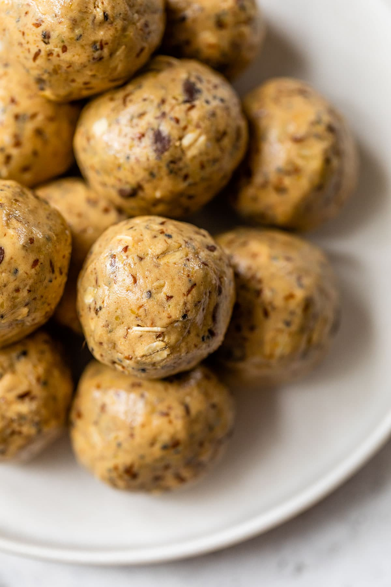

Peanut Butter Power Balls

Description
Delicious no grain peanut butter protein balls.
Ingredients
- Peanut Butter
- Unsweetened Coconut
- Flax Seed
- Protein Powder
- Allulose (non-digestable sweetener)
- [Optional] Maple Syrup
- [Optional] Dark Chocolate (>=60% Recommended)
Steps
- Mix all ingredients in a large mixing bowl
- Stir until thoroughly mixed and substance can be handled with your hands
- Roll into 2.5 cm balls and set on a cookie sheet with parchment paper, keep them spaced apart until dry
- Once all peanut butter balls have been rolled place cookie sheet in refridgerator for 1 hour
- Once cool you can move to longer-term storage
- Recommend storing in freezer and eating directly from freezer (not required)